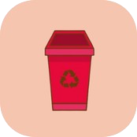

Ícone da reciclagem: Representa a importância da reciclagem para o meio ambiente.
Lata de descarte de Madeira: Madeira pode ser reaproveitada na construção civil e na produção de móveis.
Lata de descarte de Metal: Metais são 100% recicláveis e reutilizáveis várias vezes.
Lata de descarte de Papel: Papéis recicláveis ajudam a reduzir o desmatamento.

Lata de descarte de Plástico: Plásticos devem ser reciclados para evitar poluição ambiental.
Lata de descarte de Vidro: Vidros podem ser infinitamente reciclados sem perder qualidade.